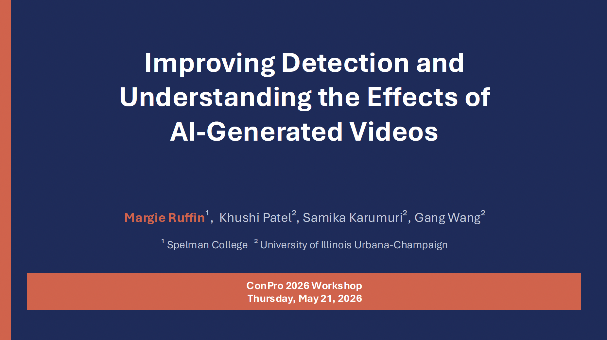
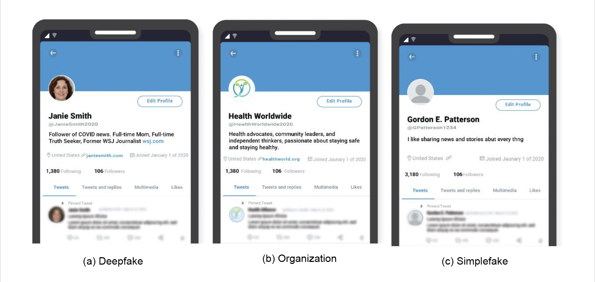
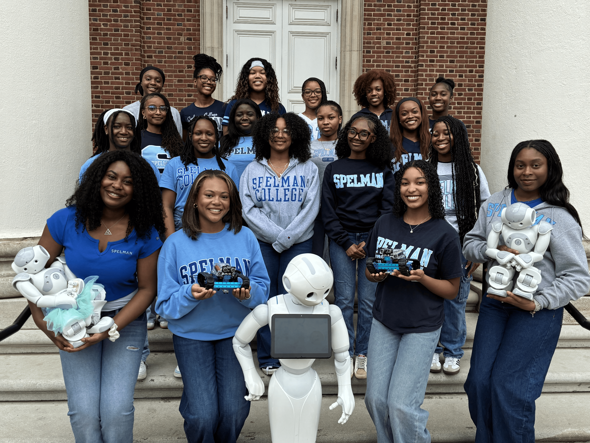

Assistant Professor · Computer Science · Spelman College
I am an Assistant Professor of Computer Science at Spelman College and a Faculty Fellow with the Atlanta University Center Data Science Initiative. I earned my PhD at the University of Illinois Urbana-Champaign, where my research focused on deepfakes, disinformation, and AI-generated content detection; and on how people perceive and are affected by manipulated media. My work has appeared at various domestic and international conferences. However, I pride myself on the work I do in the classroom and community just as much as I do in the lab, shown through my teaching, service, and advising of the SpelBots Robotics Team.
Research
A quick look at my active research threads — see the Research page for the full picture.

Research · Ongoing
Two current threads: building better detectors for AI-generated video, and analyzing the real-world harm that video causes once it spreads — looking past "is it fake" to "what damage does it do."
Research · ICWSM 2025
Security and trust aren't just an algorithm problem — evaluating training strategies that measurably improve people's own ability to detect deepfake images, not just a model's.

Research · ICWSM 2024–2026
Studying how deepfake-enabled profiles and manipulated images shape perceptions of disinformation, and how to train people to better detect them — published at ICWSM 2024, 2025, and 2026.
Selected Works
Three projects that best represent the range of what I work on.
Research · Current Focus
My current research centers on two connected threads: building stronger detectors for AI-generated video, and studying the real-world harm that video causes once it spreads — moving past whether content is fake to what damage it actually does.
Read more →Teaching · Spelman College
I am focused on building and evolving the CS and data science curriculum at Spelman. I have developed original courses (e.g.,The Art of Data Collection) and implemented widely known ones (e.g., Berkeley's Data8 -Foundations of Data Science). This work is done support college's Data Science for HBCUs initiative.
Read more →
Outreach · SpelBots
The SpelBots are Spelman College’s all-Black-women robotics team in Atlanta, Georgia. As a former member and captain, it brings me great joy to now serve as their faculty advisor. This postion involves advising the SpelBots team through competitions, hackathons, and community service.
Recent